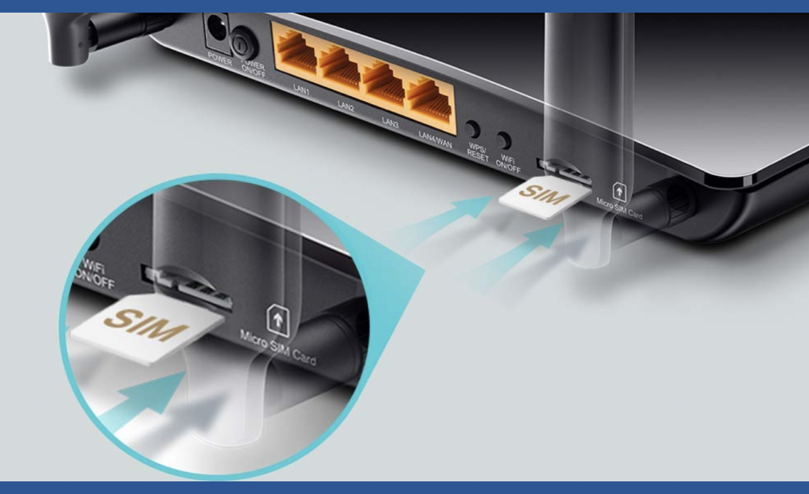

#ACCESSORI👥
⬆️📌 MODEM ROUTER 4G: cosa sono e perché sono utili
👉 Le bollette sono salate, la connessione internet va e viene, è più il tempo che perdi a maledire il tuo modem e non sai come fare? La soluzione ce l'hai a portata di mano.
🔷Un router 4G, cos’è esattamente? Queste piccole scatole possono cambiare la nostra vita quotidiana, sempre più collegata ad internet. Ti consentono di creare una vera rete locale di qualità a casa vostra e ancora, accedere ad Internet ad alta velocità in 4G / 4G + dove le connessioni ADSL non arrivano o presentano problemi di ricezione.
🔷 PERCHE' ACQUISTARLO?
- Se la tua linea internet fissa è troppo lenta
- Se la bolletta telefonica è sempre più cara, spesso senza motivo
- Se per avere internet il gestore ti richiede qualche mese di tempo
- Se non è possibile concludere un contratto perché la tua zona non è coperta
- Se, semplicemente, ti rifiuti di concludere un contratto che ti vincola per due o tre anni, salvo salatissime penali…
…qualsiasi sia il motivo, puoi risolvere i problemi indicati con un buon modem Router Wi-Fi 4G e navigare in Internet ad alta velocità pagando solo la ricarica della SIM!
🔷 QUALI SONO I VANTAGGI DI UN ROUTER 4G?
- Il primo è quello di non avere alcun vincolo con nessuna compagnia telefonica. Rispetto al modem tradizionale da collegare con la linea fissa, in questo caso usufruirai di una scheda SIM che potrai caricare o meno quando vuoi.
- Il secondo è che la linea Internet è mediamente più veloce e stabile ad eccezione fatta per la fibra. Difficilmente, infatti, subirai cali di connessione così come è molto raro che guasti tecnici possano pregiudicare il tuo lavoro o la velocità.
- Il terzo è che, alcuni modelli, puoi portarli sempre con te. Magari, ad esempio, hai una casa vacanza senza linea fissa. Hai bisogno di un dispositivo che possa collegarsi a Internet e, quindi, il router 4G risulterebbe perfetto in queste circostanze.
🔷 CHE COS'E' IL 4G E PERCHE' E' COSI' IMPORTANTE?
- Il 4G, assieme al 5G ormai in espansione, è una delle ultime evoluzioni in materia di banda larga e migliora la velocità di connessione a Internet. Chi dispone di questa rete, infatti, può accedere al servizio in cloud velocemente e vedere video senza interruzioni. Ciò ci permette anche di seguire le videoconferenze con la webcam in tutta tranquillità, senza aver bisogno di trovare un Wi-Fi.
🔷 COME SCEGLIERE UN ROUTER 4G?
- Velocità di connessione. La velocità di collegamento deve essere il tuo obbiettivo principale e dipende da tre fattori:
- Il tipo di dispositivo
- Il gestore scelto acquistando la SIM
- La zona dove utilizzare il modem wi-fi.
- Stabilità di connessione. I router 4G più innovativi non hanno di questi problemi però, se hai una casa in montagna, è sempre meglio verificare.
- Autonomia della batteria. Se decidi di utilizzare il tuo modem anche fuori casa, cerca di vedere per quante ore dura l'autonomia della batteria se vuoi usarlo tutta la giornata.
- E' molto importante anche scegliere l'offerta giusta con almeno 50 Gb se utilizzi internet per scuola o lavoro e se ti piace anche scaricare musica, da 70 Gb in su se ti piace anche vedere film in streaming o giocare online.
📌 CONCLUDENDO, SE LA TUA RETE FISSA E' MOLTO ONEROSA E POCO PRESTAZIONALE IL ROUTER 4G PUO' FARE AL CASO TUO.
Se lo desideri, iscriviti ai mie canali social per restare aggiornato ⬇️
Social MediaInoltre se hai trovato utile ed interessante questo articolo, non esitare a condividerlo, a lasciare un tuo mi piace 👍, o seguire la mia pagina Facebook, per sostenermi e continuare ad informare. Grazie anticipatamente a chi vorrà farlo.